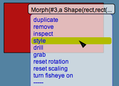

Lively Kernel Tutorial: (8) Styles and Style Panels
Back to Introduction
PREVIOUS
Source code of this demo
NEXT
The visual attributes of each object in the system can be
manipulated easily. For every object, you can use its
popup menu to open a style panel.
The style panel allows you to change, e.g.,
the border width, border color, fill color/pattern as
well as the opacity of the object.

Notes:
- You can also change the visual attributes of the world itself
by opening a style panel from the popup menu of the world
(background of the display).
- You can modify the styles of multiple objects simultaneously
by opening a style panel for a selection tray.
Try it yourself! Try changing the various visual attributes
of the red rectangle using the style panel. Try using different
gradient colors as well as opacity levels.
Note: Currently opacity works only with simple fills, and not with
gradient fills or stipple patterns.